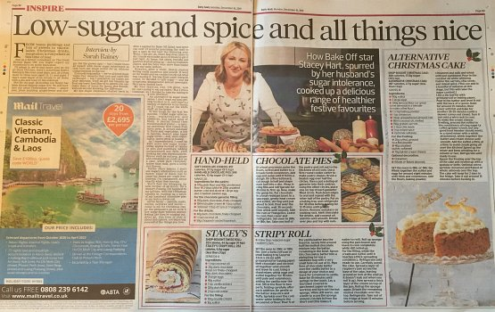

Christmas recipes

Pick up a copy of today's Daily Mail to uncover some great reduced sugar recipes.
Delighted to see three reduced sugar Christmas recipes, from The Great British Bake Off semi-finalist Stacey Dee's Kitchen, in today's Daily Mail...and all featuring xylitol.
Grab a copy of today's paper or click on the link below for the full recipes, which include an amazing Swiss Roll and an alternative Christmas Cake.
https://www.dailymail.co.uk/…/Bake-star-Stacey-Hart-cooks-d…